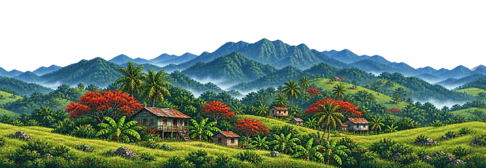

Disponible
Puerto Rico Run
Corre por caminos de montaña, salta obstáculos y explora un paisaje rural inspirado en Puerto Rico.
Jugar ahoraKoki Play reúne juegos independientes hechos paso a paso, con inspiración boricua y ganas de seguir creando. Escoge una aventura y juega desde tu computadora o celular.
Elige qué jugar
Esta colección crecerá con nuevos minijuegos. Por ahora, ya puedes salir a correr por el campo.

Corre por caminos de montaña, salta obstáculos y explora un paisaje rural inspirado en Puerto Rico.
Jugar ahoraUn minijuego nuevo está en camino. Aquí aparecerá cuando esté listo para jugar.
Muy prontoKoki Play irá sumando experiencias breves, originales y fáciles de disfrutar.
En preparaciónApoya el desarrollo
Tu apoyo ayudará a cubrir los créditos de herramientas Pro y a seguir creando juegos y minijuegos para Koki Play.
Apoyo directo en preparación. El botón de Buy Me a Coffee o patrocinio se conectará cuando esté lista la cuenta de aportaciones.